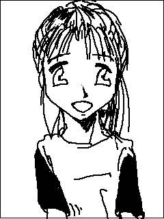
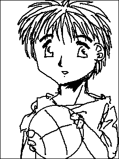
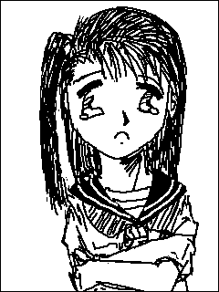

ワンスモア フリースロー
文 ：ことぶきひかる
Ｃ Ｇ ：Hikaru Kotobuki
デザイン協力：ＮＤＣ−ＳＳ
市民体育館の外壁に備え付けられたバスケットのゴールに，雄二は、ボールを
投げた。
ストンと言う音をたてながら、ボールは、ゴールをすり抜ける。
このゴールは，ストリートバスケが流行った頃に付けられたもので、今では、
雄二以外使う者は皆無と言ってもよかった。
フリースローライン、スリーポイント，様々な位置から、シュートを繰り返し
ながら、雄二は，正紀のことを考えていた。
雄二と正紀は、小学校からの友達・・・いや、親友だった。
小学校の時、一緒に町別対抗バスケットの試合に参加して以来，その魅力にハ
マった２人は、中学まで，一緒にバスケを続けてきた。
むろん、高校でも、２人はバスケを続けるつもりだった・・・少なくとも，雄
二は、そう想っていた。
しかし、高校入学直後、突然，正紀は転校した・・・らしい。
らしいというのは，そのことが、ある朝、ＨＲで担任から告げられたことだっ
たからだ。
その時には、すでに，転校の手続きも済み、正紀一家は，どこかへ引っ越して
しまっていた。
借金を造って夜逃げしたらしい。
父親が、浮気をして，家庭が崩壊したそうだ。
無責任な噂が飛び交ったが、雄二は、正紀が、自分に何も言ってくれなかった
ことが，悲しかった。
（なんでだよ・・・なんで、何も言わずに・・・それが無理だったとしても，
なんで手紙も電話もないんだ。正紀！）
邪念が入ったせいか、シュートは想うように決まらなくなる。

「ねえ、バスケットやってるの？」
「まあ、いいんじゃないか。うちのサークルは、あくまでもバスケを楽しもう
って集まりなんだし。」
真紀の参加希望に対して，サークル代表の言葉は、かなり好意的なものだった
。
「けど、終わる時間が夜遅いから、女の子は危ないかなあ・・・」
確かに、このサークルの集合時間が夜の７時で終了が９時。
小学生の女の子１人では、何かあってからでは遅すぎる。
「両親か誰かに、帰りだけでも迎えに来てもらうようにしたほうがいいな。そ
れとも，雄二，お前、送り迎えしてやるか。」
「ちょっと、待ってくださいよ。なんでオレが。」
「送り迎え程度で，やけにつっぱらかるじゃないか。まさか、お前，ロリコン
じゃないだろうな。」
「そそ、そんなことありませんよ！」
想ってもみないことを言われて、雄二の口調が、無意識のうちに荒くなる。
「ジョーダン。冗談だって。けど、保護者の承認と送り迎えの件は、ちゃんと
しとかないとな。なにか、あってからじゃ、遅いんだから。」
約束の日、その日は、朝から雨だった。
（これじゃあ，来ないかなあ。真紀ちゃん。）
そう想いながらも、雄二は，体育館脇に脚を運んだ。
雄二の意に反して，体育館脇のゴールの下には、傘をさして佇む、１人の少女
の姿が見える。
この前同様，Ｔシャツにスパッツ、ポニーテールという外見だったが、雨に濡
れたせいか、その姿は，捨てられた子猫か子犬のように，妙に寂しく悲しそうに
見えた。
活発さの象徴とも言えるポニーテールも、今日は、湿ったせいか，まるで，う
なだれた尻尾のようだ。
「あ、雄二・・・お兄ちゃん。」
雄二に気づき、真紀の表情が，いきなり明るくなる。
心なしか，ポニーテールが、ぱっと、跳ね上がったように見えた。
「あ、真紀ちゃん。いて良かったよ。」
彼女につられて，雄二の表情も和む。
「約束だもん。来てるって。で、どうだったの？」
「ああ、取りあえず、参加するのは問題ないんだけど，うちのサークル、終わ
る時間が結構遅くなるんだ。真紀ちゃんは，まだ小学生だろ。それが，困りもん
なんだ。誰か、送り迎えしてくれればなあ・・・」
「雄二お兄ちゃんが，送ってくれるんじゃないの？」
「え、なんで，おれが？」
「じょーだん。冗談だよ。でも、そこまで、嫌がる事って無いんじゃない？」
真紀は、雄二を非難するように、少し頬を膨らませて見せた。
「ご、ごめん。そういうつもりじゃあ・・・」
「じゃあ、かわりに、うちに説明に来てね。ボクが，話しただけじゃ、おじい
ちゃん達，納得してくれないかも知れないから。」
「おじいちゃん？それじゃあ，真紀って・・・」
両親がいないなんて，まずいこと聞いたなあ。と，雄二は、後ろめたい気持ち
になる。
「あ、そうじゃない。そうじゃないの。お父さんが転勤で，お母さんも一緒に
行っちゃたから、ボクは、おじいちゃんの家にいるだけってこと。」
慌てて、真紀は、事情を説明した。
やむなく、雄二は、真紀の自宅まで、事情を説明しにいくことになった。
だが、流石に、帰宅が９時過ぎとなると，祖父母の表情が硬くなる。
「大丈夫だって。このお兄ちゃんが、送ってくれるって約束したから。」
「え？」
あっけらからんとした口調で，そう決めてしまった真紀に、雄二は二の句が継
げない。
「そうだよね。雄二お兄ちゃん。」
そこまで、先に言い切られてしまっては，違うとはいえなくなってしまう。
「あ、ああ・・・」
力無く呟きながら，まあ、それくらい，いいかと、雄二は自分に納得させた。
「じゃ、結局、お前が、送っていくことになったのかよ。」
雄二からの報告を聞いて、サークルのメンバー全員が笑い転げた。
「ま、いいんじゃないの。真紀ちゃんが、うちに入ったのも、お前が縁なんだ
から，最後まで面倒見なくちゃ。」
笑いを堪えながら，サークル代表は、本気とも冗談ともとれる応えを返す。
「そうそう、折角だから、恋人だと想って，面倒見てやれよ。」
別のサークル会員の１人が，軽口を交えた。
「恋人ぉ！冗談はよしてくださいよ。あのコはまだ小学生なんですよ。」
「小学生たって、１２だろ？後８年もすれば，お前は、２４で、あのコは２０
。なんら、問題はないじゃないか。むしろ、お似合いなぐらいだぜ。」
「そりゃ、そうですけどね，だからって、小学生相手に，その気になれないで
すよ。」
そう応えながら、雄二は、真紀と自分との年齢差を、改めて、考えていた。
実を言えば、サークルメンバーで、雄二の次に若い人でさえ、２２歳。
すなわち、世代的に言えば、真紀の方が、雄二に近いことになるのだ。
「まあ、小学生相手に，その気になっちゃ、犯罪だわな。だから、間違っても
、手を出すなよ。このサークルの存続に関わるからな。」
「自分たちで，そそのかすようなこといっといて、何，言ってんですか！」
「お、じゃあ、俺達が、そそのかしたのをいいことに、お前、やるつもりだな
。」
サークル代表の言葉に、再び，雄二を除く全員が笑い転げた。
「へー、このコが真紀ちゃん？」
「坂城真紀です。どうぞ、よろしくお願いします。」
屈託のない笑顔のまま、真紀は、ぺこんと頭を下げた。
ポニーテールが，ぴょこんと揺れる。
「ふーん、これが雄二のガールフレンドか。」
「ちょっと待ってくださいよ。オレと真紀ちゃんは知り合ったばかりで、そう
いうもんじゃ・・・」
「そーそー、ガールフレンドじゃなくて、恋人だもんね。」
「え？」
「ま、真紀ちゃん！」
真紀の想わぬ言葉に，雄二の顔が，蒼白になる。
「おー、雄二。お前、やっぱり・・・」
サークル代表の目つきが冷たいものになった。
「信じてくださいよ。オレは、そんなこと。」
「そんなことって，どんなこと？」
真紀の、見計らったようなツッコミに、体育館に、雄二を除く笑い声が響いた
。
雄二から参加ＯＫの連絡を貰い、早速，真紀は，練習に参加し始めていた。
それまで社会人が中心だったサークル内では，雄二が最年少だったが、これで
ようやく，彼の後輩ができたことになる。
小学生で，屈託のない無邪気な明るい性格となれば、ロリコンでなくとも、可
愛がりたくなる。
真紀は、あっというまに、サークルのマスコット的存在になった。
今日も、サークルの女性の１人が。真紀の髪を、編んでいる。
ポニーテールだと、どうしても、激しい運動の際，左右に振れて，邪魔になっ
てしまう。
それを見かねて、練習開始前に，女子メンバーの１人が真紀の髪を編み込むの
が、習慣になりつつあった。
もっとも、長くクセのない真紀の髪をいじれるのは、彼女達にとっても，苦痛
ではなさそうだったが。
「真紀ちゃんも、女の子なんだから，もっと、髪にも、気を使わなきゃだめよ
。」
「だって、面倒くさいんだもーん。」
「全く・・・ま、自分でやると、三つ編みっていうのも、結構面倒くさいもん
ね。バランスよく編むのも難しいし。はい、これで出来上がり。」
完成した三つ編みを，うなじでシニヨンにまとめる。
「ありがとう。お姉さん。」
「なんのなんの。それじゃあ、練習、始めようか。」
「うん。」
勢いよく、真紀は、コートに駆け出した。
実際、体力的技術的には，まだ未熟な真紀ではあったが，その活発さと熱中は
，ともすれば，ダレそうになるサークルに，いい影響を与えていた。
「ちわーす・・・あれ、真紀ちゃんは？」
普段なら一番乗りしている真紀の姿が，今日は見あたらず，雄二は、戸惑いの
声を漏らした。
「ああ、電話があってな。今日は、具合が悪くて、休むそうだ。」
サークル代表が応える。
「変だなあ。一昨日は、あんなに元気だったのに。」
「まあ、冬も近いだけに、風邪をひいても不思議じゃないな。あのコの事だか
ら，多少具合が悪くても，無理してきてたのかもしれないし。」
「確かに、それは言えますね。」
「けど、やっぱり，お前、真紀ちゃんのこと気にしすぎだぞ。」
「そそ、そんな。ただ、サークルに紹介した手前，責任、感じるのも当たり前
じゃないですか。」
２日後の練習には、真紀は戻ってきた。
だが、いつもは，Ｔシャツにスパッツなのに、今日の真紀の服装は，ジャージ
の上下だ。
「よお、真紀ちゃん。身体の具合は、どうだ？」
彼女への関心が責任によるものか、個人的な感情によるものかは、はっきりし
ないが、雄二は、真紀に問いかける。
「う、うん・・・ちょっと、頭が痛かったから・・・」
そう応える真紀の口調は、彼女にしては珍しく、どこか歯切れが悪く，よそよ
そしい。
「まあ、カゼには、気をつけろよ。」
彼女の態度の変化を、病み上がりのせいだと、一方的に解釈し、雄二は、当た
り障りのない言葉をかけた。
病み上がりのせいだけなのか、その日の真紀の練習中の動きも、どこか、ぎこ
ちない。
ファアルを連発し、シュートどころか、パスさえも，ミスの連続だ。
「真紀ちゃん、まだ無理するなよ。ちょっと、一休みしな。」
雄二の勧めに，素直に従って，ベンチに座った真紀の顔は、今まで見せたこと
のない辛そうな表情を見せていた。
「真紀ちゃん・・・やっぱ・・・りなんだよね・・・ツじゃ・・・めだっ・・
・し・・・」
「‥‥がに‥‥ン，使‥‥けには行かな‥‥ね・・・」
ベンチで、女性メンバーが、ひそひそ話をしていることに、雄二は気づいた。
「ん、なんですか？」
真紀という単語が、耳に引っかかり、雄二は、２人に話しかけた。
「え、あ・・・こ、これは、男には関係ない話。」
雄二を、追い払うように、２人は、手を振った。
帰り道，真紀の辛そうな表情は変わらない。
「真紀ちゃん。本当に、大丈夫か。なんなら、背負って行くけど。」
「ん、大丈夫。大丈夫だよ。」
「それなら、いいけど・・・でも、カゼの時は、無理に出てくるもんじゃない
よ。」
「別に、ボクは，カゼひいてるわけじゃないって！」
「カゼじゃない？じゃあ、どうしたんだ？」
「・・・もう！雄二お兄ちゃんのトーヘンボク！」
真紀は，ぷいっと，拗ねるように、顔を背けた。
（女心って言うのは、難しいなあ・・・）
真紀を送った帰り道、雄二は、彼女が何を言いたかったのか分からず，ため息
をついた。
結局，彼が、事の真相に気づいたのは、実に２週間も後のことだった。
「きゃっ！」
ディフェンスに接触し、真紀は、頭から床に突っ込むようにして派手に転倒し
た。
ウェイトで負けている分、ぶつかった際、真紀の方が、どうしても、力負けし
てしまうのは避けられない。。
「大丈夫？真紀ちゃん。」
ベンチで、控えていた１人が、救急箱を持って，駆け寄る。
「う、ううん。大丈夫だよ。」
だが、声こそあげないものの、表情からして、痛みを感じていることは一目瞭
然だった。
こういったことが，いつ起こっても不思議ではないスポーツだけに，湿布やテ
ーピンブは用意してあるものの，あくまでも応急措置に過ぎない。
「軽い捻挫みたいだな。けど、今日は無理しない方がいいけど，帰りはどうす
るか・・・雄二，いつも、お前が送っていくんだから、おんぶしていってやれよ
。」
「え、オレがですか？」
雄二は、一瞬、怪訝そうな表情を見せる。
だが，そう応えたものの、雄二は、おぶっていってやるつもりになっていた。
小柄な真紀の身体なら，大したことにはならないだろう。
どうせ、送っていく道なのだ。
「よし、決まりだな。真紀ちゃん，今日は、雄二におんぶして貰いな。変なこ
とされたら，後で，ちゃんと，俺達に教えるんだぞ。」
「ちょっと、待ってくださいよ。オレが，なんでそんなことを・・・」
「しないって言うなら、おんぶしてやるって事だよな。」
「・・・まあ、真紀は妹みたいなもんだから仕方ないか。」
妹という言葉に、真紀は，少し眉をひそめたのだが，雄二は気が付かなかった
。
だが、背負ってみると、真紀の身体は，思いの外，軽かった。
両手に乗っかっている腿も、首にまわされた腕も，まだ細い。
雄二は、彼女が、まだ小学６年生，１２歳の少女であることを想い出した。
真紀を送る途中，道を中程まで来た頃だろうか・・・
「お兄ちゃん・・・」
「んん、どうしたい。足が痛いか？」
「そうじゃなくて、ごめんなさい・・・」
「あ、足のことか。気にするなよ。」
「うん・・・ねえ、雄二お兄ちゃん・・・」
「どうしたんだよ。今日は、変に，しおらしい・・・女の子みたいじゃないか
。」
「それじゃボクが女のコじゃないみたいじゃない！・・・じゃなくて、ね、ボ
クのこと、どう想う？」
「そりゃあ・・・真紀のことだろ・・・まあ，妹みたいなもんだな。手がかか
るけど、面倒みなくっちゃいけないっていうか。」
「そっか・・・妹かあ・・・」
「けど、いきなり、どうしたんだよ？そんなこと聞くなんて。」
「あ、何でもない。何でもないって。」
誤魔化そうとするように、真紀は、雄二にしがみついた。
上半身が締め付けられたせいで，一瞬，息苦しさを覚えつつ、雄二は、背中に
、柔らかい存在を捉えた。
（え、これって・・・）
今、背負っているのが真紀である以上，それは、真紀の身体の一部であること
は疑いようがない。
そして触れている位置からして，その部分は・・・
（おお、お腹じゃないよな・・・）
自分でわざとボケをかまして，ごまかそうとしたものの，かえって、そのこと
が，柔らかな存在に，意識を集中させることになってしまった。
否が応でも、背中の感覚が敏感になち，神経が集中してしまう。
最近の小学生が生育がいいとは聞いていたが、掌ならともかく、背中でも感じ
取れるほど，成長しているとは。
真紀の汗の匂いが、異常なまでに強く嗅ぎ取れた。
その中に混じっている少女、いや女の香りも・・・
サークルで、８年後とはいわれたものの、後３、４年もすれば、出るところは
出て，締まるところは締まり，体つきも、少女から女へとは変わっていくことだ
ろう。
いや、ある意味、既に女になっているのだ。
（もも、もう，ブラとかしてんのかなあ・・・）
いつのまにか、雄二は、数年後の真紀の外見を想像していた。
その妄想は、次第にエスカレートしていき、下着姿，そして，ついには・・・
このままでは、８年後どころか、一瞬すら待てなくなってしまいそうだ。
反射的に、雄二は駆け出した。
「きゃっ！」
いきなりの雄二の行動に、真紀は、小さな悲鳴を上げる。
自分自身の照れと欲情を振り払おうとするように。雄二は全力疾走した。
「お、お兄ちゃん、そんなに急がなくても・・・」
だが、口を開いたら，とんでもないことを言ってしまいそうで、雄二は、返事
が出来ない。
真紀の家までは、あっと言う間だった。
知った相手とは言え、孫娘が背負われて帰ってきたことに，真紀の祖父母は，
驚きを隠せない。
「軽い捻挫のハズですけど，クセになると大変ですから、明日、念のため、医
者にいった方がいいかも知れません。」
気を緩めると、想わぬ事を口走ってしまいそうな気がして、事務的にそれだけ
を告げる。
「いえ、本当に申し訳ありません。」
「それじゃ、お邪魔しました。」
ともすれば、赤くなってしまう顔をみられてくないので、雄二は逃げ出すよう
に，真紀の家を後にした。
流石に、捻挫を悪化させてはかえって迷惑だと想ったのか，真紀は、２回ほど
練習を休んだが、３回目からは、練習に復帰した。
「真紀ちゃん。もう大丈夫なのか？」
「うん、雄二お兄ちゃん、あの夜、ありがとね。でも、何で、あんなに、急い
だの？」
「い、いやな。それが・・・ビデオ・・・そう，ビデオの予約するの忘れてた
んだ。だから、つい、急いじゃってな。」
気にしていないと思い込んでいたことを、真紀に聞かれ、雄二は慌てて，その
場を誤魔化す。
「ふーん・・・」
真紀は、どこか、納得がいかない様子だったが、それ以上，追求もしなかった
ため、雄二は、ほっと，胸をなで下ろした。
あの夜、真紀のことを妹みたいな存在だと，自分は言ったが、それは、あくま
でも、彼女のことを少女として見てきたからだった。
しかし、真紀が、女になったとき、自分は、彼女のことを，どう見るようにな
るのか。
雄二は、自分で自分に問いかけてみたが、答えは、容易くは見出せそうになか
った。
そんな想いを胸に抱え込んだまま，無邪気に駆け回る真紀の後ろ姿を見るのが
辛かった。
「それじゃあ、練習始めるぞ。」
サークル代表の声に立ち上がったものの、雄二の足取りは重かった。
季節は，いつのまにか３月になっていた。
外を吹く風も暖かくなり、雄二は，体育館脇のゴールで、シュートの練習を再
開していた。
暖かくなったとはいえ、まだ風が強く、時折の横風が、シュートの軌道を乱そ
うとする。
雄二は、いつもより回転を強めに与えながら，シュートを繰り返す。
「お兄ーちゃん。」
背後から聞き覚えのありすぎる声・・・真紀だ。
３回に２度は，雄二の個人練習に、真紀は、顔を出しに来ているようだ。
「よお、真紀・・・？！」
いつものことだけに、何気なく振り返った雄二の顔が強ばった。
そこにいたのは、真紀だったが、いつもの真紀ではなかった。
まず、雄二を絶句させたのは，風に翻ろうとするスカートと漆黒の光沢を持つ
長い髪だった。
そして、上半身を覆っていたのは，小豆色のスカーフが巻かれた，白と紺の真
新しいセーラー服だった。
足下も、いつもの分厚いバスケット用のソックスとがっしりとした造りのシュ
ーズではなく，白いハイソックスに黒い革靴だ。
いつも見慣れているポニーテールが、下ろされてるためか、それともおろし立
てらしきセーラー服のせいか，今日の真紀は，少女という雰囲気が、妙に強く感
じられた。
「どー、可愛い？今日ねー、中学の制服が届いたから，お兄ちゃんに見せに来
たんだよー。」
スカートの端を軽く持ち上げて見せながら，真紀は、微笑んだ。
心なしか、その表情は、いつもの元気っ娘の真紀ではなく、恋に恋する年頃の
少女のそれを想わせた。
一瞬、雄二の心臓が高鳴った。
今の真紀は、いつも見慣れている真紀と同一人物とは想えなかった。
セーラー服より，いつものＴシャツとスパッツの方が身体のラインを明確に浮
かび上がらせているハズなのに，スカートのためか、今の真紀の方が、その体つ
きに、女という雰囲気を漂わせている。
今，気づいたことなのだが、その声も、出会った頃のアルトから、ソプラノと
言った方が近い声質に変わっていた。
セーラー服の袖からのぞく手首も，ハイソックスに覆われた脹ら脛や踝も信じ
られないほどに細く、黒い革靴も、雄二の手すら入らないのではないかと想える
ほど小さい。
雄二が、本気で力を込めれば、ポキっと折れてしまいそうな華奢な少女の身体
が，そこにあった。
（どう、どうしたんだよ。相手は、妹みたいなもんじゃないか、それなのに・
・・）
「ふーん、スカート，はくと，女の子になるんだな。」
自分の胸の高鳴りを真紀に知られないよう，押し隠そうとするように，雄二は
皮肉めいた言葉を呟く。
「あ、ひっどーい！それじゃ、ボクが、女の子じゃないみたいじゃないか！」
真紀は、頬を軽く膨らませた。
「ボクなんて、言葉遣いしているクセに、女の子だと想われたいのか。」
「ふーん、それじゃ、ボクが女であるショウコ見せたげようか。」
そういうが速いか、真紀はいきなりスカートのホックに手を伸ばした。
「あ、ば、ばか、やめ！」
雄二が制止するより速く，真紀は、ホックを外すと，スカートを脱ぎ下ろした
。
「あ？！やめ！」
雄二の顔がひきつり，同時に赤面した。
まずいと、想いながらも、目をつぶることが出来ない。
「・・・ああ？」
数瞬の後，雄二の声のトーンが、数オクターブ下がり，顎が情けなく垂れ下が
る。
真紀がおろしたスカートの下には、下着ではなく，短めのスパッツが，しっか
りと，はかれていたのだ。
「へっへー，一瞬，期待しただろー？」
初めから、そうするつもりだったに違いない。
唖然とする雄二の顔を見ながら，真紀は、悪戯っ子のような笑顔を浮かべた。
「お、お前なあ・・・」
期待を裏切られた無念の思いが混じった安堵のため息を吐きながら，雄二は、
鼓動の速まる心臓を，抑え込もうとしていた。
「そんなことばかりしているから、女の子だと想われないんだよ。」
自分の驚きと期待を察すられないために、雄二は，更に軽口を叩く。
「あ、ひっどーい！そこまでいうことないじゃない！」
スカートのホックをはめ直しながら，真紀は、不満の言葉を口にする。
「へー、じゃあ、ボクじゃなくて，あたしって、いってみな。」
「あ、そそ、そんなこと，言えるに決まってるじゃない。」
口ではそういったモノの，真紀は、動揺を隠しきれない。
「じゃあ、言って見ろよ。」
「そ、それじゃいうからね。」
平静を装ってはいるモノの，喉の動きで、唾を飲み込んだことが、一目瞭然だ
。
「いうよ、いうからね、ちゃんと、聞いてよ・・・あ、ああ、あ、あた，あた
し・・・」
たった一言、あたしと、呟いただけなのに，真紀の顔は、まるで、告白したば
かりの乙女のように真っ赤になる。
「へっへっへ、あたしという位で、そこまで、真っ赤になるなんて，女の子へ
の道は遠いな。」
「あー！そこまで、言うことないじゃない！」
顔を赤くしたまま，真紀は、雄二に詰め寄る。
雄二は、おどけた仕草で、真紀から、逃げ出した。
「こらー、まてー！」
「へっへー、捕まえてみな。」
「もう！お兄ちゃんのイジメっこぉ！」
３０秒ほど追いかけっこが続いただろうか，慣れないスカートと革靴のためか
，不意に、真紀の身体が前のめりになる。
真紀が体勢を崩したことに気づいて、雄二は、慌てて駆け寄った。
「きゃっ！」
「お、おい！」
間一髪！
雄二が駆け寄った分，真紀は、雄二の胸の中に正面から飛び込む形になり，そ
の勢いで、雄二は、彼女の身体を抱えるように抱きしめることになった。
真紀のさらさらっとした長い髪が、雄二の顔を撫でた。
ポニーテールにしていることが勿体ないような、クセのない艶やかな髪だった
。
シャンプーとリンスの入り交じった香りが、雄二の鼻孔を刺激する。
彼女を抱きしめる両の手と腕から，セーラー服の布地越しに，真紀の華奢な身
体と、その体温が，はっきりと感じ取れた。
あの夜の時のように、雄二は、真紀に女を感じていた。
小枝のような細さの中に，紛れもない女としての柔らかさが感じ取れる。
「ゆ、雄二・・・お兄ちゃん？」
自分の身体を抱きしめたまま，ぴくりともしない雄二に不安を覚えたのか，真
紀は、恐る恐る声をかけた。
「あ、ああ、真紀ちゃん、大丈夫か？」
自分自身の性欲の盛り上がりに気づき、慌てて，雄二は、真紀の身体を抱き起
こす。
「う、うん、はき慣れてない靴だったから・・・」
「あ、ああ、また捻挫したら大変だからな。」
これ以上、真紀の身体に触れていたら，いや、その香りだけでも、自分がおか
しくなりそうで、雄二は、彼女から距離を置こうとする。
「どうしたの。お兄ちゃん？」
自分から離れようとする雄二の素振りに、真紀は怪訝そうな顔をする。
「あ、あ、オレ、用事、想いだしたから、帰るわ。」
「あ、お兄ちゃん。」
真紀の呼び止めようとする声が聞こえたが，振り返ったら、もうどうにも自分
に止められなくなりそうで，雄二は、息が止まるまで走り続けた。

季節は巡り、また夏がやってきた。
後２日で，夏休みにはいるというのに、真紀は、雄二と顔を会わせようとはせ
ず，遂に業を煮やした雄二は，直接、真紀を捕まえようと，学校の帰りを待ち伏
せすることを決めた。
真紀の自宅の住所から、彼女の学区は，すぐに分かった。
変質者に想われないよう、誰かと待ち合わせしている振りをすること２０分、
３人連れの女子生徒が、校門に姿を現す。
その真ん中にいるのは，見間違えるはずもない。
真紀だ。
ただし、今日の真紀は、いつもの見慣れたポニーテールではなく、おろした髪
で、右のこめかみあたりの、一房を縛っている。
夏服のセーラー服と，さらけ出された額のせいで、妙に清楚な雰囲気が、今の
真紀にはあった。
いつもとは異なる雰囲気に、躊躇った雄二だったが、ここで、諦めては、待っ
ていた意味がないし、真紀が，あのことを知っていたわけも気になる。
意を決して、すっと、雄二は、真紀の前に，脚を進めた。
「あ、雄二お兄ちゃん？！」
いきなり、現れた雄二に、真紀は、流石に驚きを隠しきれない。
だが、その左右にいる，真紀の友人と思しき２人の女子生徒は、真紀の態度か
ら、変なことを連想しだしたらしい。
「ねーねー、真紀。この人，誰？・・・あ、もしかして・・・」
「そ、そんなんじゃない・・・バスケのサークルの人だって。」
「あ、毎日、真紀が、のろけてる，例のアレね。」
「そそ、そんなんじゃないよ・・・」
赤面しつつ、真紀は否定しようとしたが，そんなんじゃなければ，どんなんだ
ろう。
一方、２人の関係を誤解したのか、２人の女生徒は、顔を会わせた。
「それじゃー，真紀。またねー。」
そう言い残すと、気をきかせたつもりか、２人の女生徒は，足早に，去ってい
ってしまった。
「あ・・・」
呼び止めようとした真紀を後目に、女生徒は、あっというまに、姿が見えなく
なってしまう。
他に通る生徒もなく，校門の脇で，２人っきりになってしまった雄二と真紀。
かなり気まずい雰囲気が、２人を中心に半径３メートルの範囲に漂う。
「真紀ちゃん，話したくなければ、話さなくてもいい。でも、このままじゃ、
オレが納得できない。真紀ちゃんの口から、はっきりとした返答が欲しいんだ。
」
「それって、もしかして、正紀って言う人のこと？」
「正紀！それじゃ、真紀ちゃん、正紀のこと，知ってるのか？」
真紀の意外な言葉に、今度は，雄二の方が驚く番だった。
正紀のことを，真紀は、何か知っているのか？
真紀と正紀は、面識があるのか？
確かに、それなら，５年前のあのことも，正紀から聞いたということになる。
だが、なぜ、真紀は，そのことを隠しているのだろう？
まさか、正紀の家の事情は、そこまで、せっぱ詰まっているのか。
真紀は、１０秒ほど，考える素振りをした後、口を開いた。
「そんなに正紀って人のこと、知りたいの？」
真紀は、悲しそうな表情を見せたが、興奮していた雄二は，それに気づかなか
った。
「あ、ああ、なんでもいい。知っていることがあるのなら、教えてくれ。」
「全部、話すから・・・でも、ここじゃ話せない。場所を変えて。」
「あ、ああ、分かった。」
その時の真紀の口調は、大人びていて・・・少女でないように想えた。
真紀が，雄二を連れていったのは、校舎と校舎の隙間・・・授業中，窓際の生
徒が捨てたゴミやら，足の折れた机や椅子やらが放置された、ろくに日も射し込
まない，薄暗く湿った空間だった。
「ここなら、誰も来ないだろ。」
「誰かに、聞かれちゃマズいことなのか。」
「ああ、正紀のこととなれば、それくらい、分かって貰えるだろ？」
「あ、そうだね。」
そう応えながらも、雄二は、真紀の豹変ぶりに戸惑っていた。
今の真紀の口調と態度は、１３歳の少女と言うより、まるで男性のモノだった
。
もう一度、周囲を見回して、誰もいないのを確認すると、真紀は、正面から、
雄二の顔を見つめた。
「雄二・・・お兄ちゃん，これから言うこと、信じられなかったとしても，最
後まで、聞いて欲しいんだ。」
「あ、ああ、分かった。」
今まで見せたことない，真紀の真摯な，張りつめたような表情に、雄二は頷く
しかない。
それを、確認すると、真紀は、言葉を続けた。
「信じられないかも知れない。信じて貰えないかも知れない。
だけど、聞いてくれ。実は，オレ，正紀なんだ。」
いきなりの真紀の言葉に、雄二は，その言葉を、どう解釈したらいいのか、分
からなかった。
正紀、真紀、真紀、正紀・・・真紀が、自分のこと正紀、正紀は真紀、真紀が
正紀で，すなわち，目の前にいるのが正紀、目の前にいる真紀が正紀・・・正紀
・・・
な，なにいいぃ！！
雄二は，心の中で絶叫していた。
もし、これが本当の声になっていたら、校舎のガラスが、全て割れてしまうの
ではないかと想われるほど、凄まじい叫びだった。
「お、おい、真紀ちゃん。悪い冗談は、その辺で、やめてくれよ。」
雄二の言葉に、真紀の表情が、悲しげに変わる。
「やっぱり、信じて貰えないか・・・でも、これを聞いたら・・・」
続けて、真紀は，雄二と正紀の思い出を話し始めた。
小学６年の時、女子の着替えを覗き見したこと。中学の時、裏ビデオを、こっ
そりをみたこと。そして、高校入学直後、洋モノの無修正写真集をまわし読みし
たこと。
いずれも、正紀しかしらないことだ。
そして，正紀が、真紀にこのようなことを教えるとは想えなかった。
雄二は、目の前に立っている、ようやく、女らしくなりつつある少女の姿を見
つめ直した。
「お、おい、それじゃ、本当に、お前、真紀ちゃん、君は、ウソや冗談じゃな
くて、その・・・正紀なのか？」
「ここまで、話しても信じて貰えないのか。」
「でも、正紀は，確かに男だったはずだぞ。なんどか、一緒にお風呂に入った
こともあるし，立ちションを一緒にしたこともあるのに。」
「どうやら、こういう家系らしいだ・・・坂城の家は、元々，男が生まれにく
い上に，一世代に，だいたい一人か二人，こういう風に，男に生まれても，後に
なって女に性転換する人間が出てくるらしい・・・」
雄二は、ごくりと唾を飲み込んだ。
本当に，そんな事があり得るのだろうか。
中学生の妄想にしては、出来が良すぎるが、にしても信じられない。
しかし、真紀が、本当に正紀だとしたら。
確かに、それなら、納得できる点も多い。
「オレの場合、高校になった途端、いきなり、性転換が起こったんだ。
いくらなんでも、息子が性転換したなんて事になれば，近所に誤解が生じると
言うことで、本当は，引っ越さなければならないところだったんだけど、無理い
って，オレだけ、爺ちゃん家に移ることを許して貰ったんだ。幸いというか、外
見も，こんなに変わっちゃったから，バレる心配は無かったし。実際、雄二も、
気づかなかったしな。」
そう呟く真紀の顔は、どこか、寂しげだった。
「でも、正紀は、オレと同い年だっただろ？それがなんで，小学生に・・・」
「どうしても、身体を造り替える都合上、一度、少女の肉体年齢からやり直す
必要があるみたいなんだ。子宮とか卵巣とかを、いきなり活動状態にするわけに
はいかないから、その前・・・生理とかが来る前の身体から、始め直さないと。
」
そういいながら、真紀は，自分の腹部を撫でる。
自分の身体に備わった生命宮の存在を確かめ，示すかのように。
「けど、なんで，いってくれなかったんだ。会ったその時とは言わない。けど
、これまで何度も，機会があったハズなのに。オレが、お前のことを、正紀のこ
とを，どれだけ心配したか。」
「言えるわけないじゃないか！」
責めるような雄二の口調と言葉に，真紀の口調が荒くなった。
「だって・・・だって、今のオレ、女の子なんだよ！」
口調こそ荒いものの，雄二は、真紀の瞳が潤みだしていることに気づいた。
「いきなり、女の子になっちゃって，オチＯチンもＯン玉もなくなっちゃって
、胸は膨らんできちゃって、ブラもつけなきゃいけないし、もちろん子宮や卵巣
まであるんだよ。だから、当然、生理まで来ちゃって・・・昔みたいに、雄二と
好きな同級生のこと話したり、徹夜でワイ談したり、グラビアをまわし読みした
り，もう、二度とできないんだ。
もう友達じゃいられないんだ。雄二は男で、オレは女・・・」

叫んでいなければ、今にも泣きだしてしまいそうな，涙が溢れてしまいそうな ことを、真紀が、必死に堪えながら，言葉を吐き出しているのが分かる。
全てを知った後も，雄二と真紀の関係は，少なくとも見た目には、それほど変
わらなかった。
変わったことといえば、真紀が、自分のことを，ボクではなく、あたしと言い
出すようになったこと。そして、体育館脇のゴールでの２人っきりの練習の回数
が増えたことぐらいだろう。
そして、この日も、２人は、いつものように、一対一やフリースローの練習に
余念がない。
初めて出会ったときから，真紀は、５センチほど背が伸びた。
しかし、雄二の方も４センチ以上伸びた分、２人の身長差はまだまだ大きく、
この後、真紀が雄二に追いつけることは、多分ないだろう。
だが、この身長差が、２人にとって、デフェンスとオフェンスとのハンデ以上
の障害にならないこともまた間違いない。
デフェンスを担当していた真紀が、いきなり雄二にしがみついてくる。
「おい、真紀、それじゃ、明らかにファアルだぞ。」
「いいじゃない。２人っきりの時くらい。」
肩にぶら下がったまま、屈託のない真紀の笑顔に，雄二は、それ以上言うのを
止めた。
（ま、いいか。確かに、今くらい。）
右肩に真紀をぶらさげたまま、雄二は、何気なく、空いた左腕でシュートした
。
意図せずして、そこはフリースローのライン。
左手で投げられたにも関わらず，ボールは、まるで、そこが、自分の居場所だ
とでも言うように，乾いた音を立ててリングをすり抜けた。
ワンスモア フリースロー 終
今回は、反則技の，前作悪用型手抜きの，ずるっこ悪い子作品です。
性転換の件は「４人目の姉妹」の「榊家」のプロットを，ほぼそのまま使用し
ています。
「榊」と「坂城（さかしろじゃないぞ。）」だけに、途中で、気づいた人もい
るかもしれませんな。
「４人目の姉妹」で、その件を考えるのに、七転八倒しただけに、１作だけで
、終わらせるのは勿体なかったのと、キャラクターの性格の違いで描ききれなか
った部分を，書き直したかったものですから。
後、今回は、性転換の対象が，主人公ではなく，その親友という反則技を使っ
てみました。
男という比較対象物をどう描くかで，性転換という事象の表現方法の出来が変
わってくるというのが，私の持論なものでして、男友達が，いきなり女になって
、自分の前に現れたとき、彼は、どういう行動に出るか。どういう想いを持つの
か。ということを念頭において、描いてみました。
さて、次作は、精神交換モノか、肉体変身モノか？
（現在，７：３で精神交換モノ有利。）